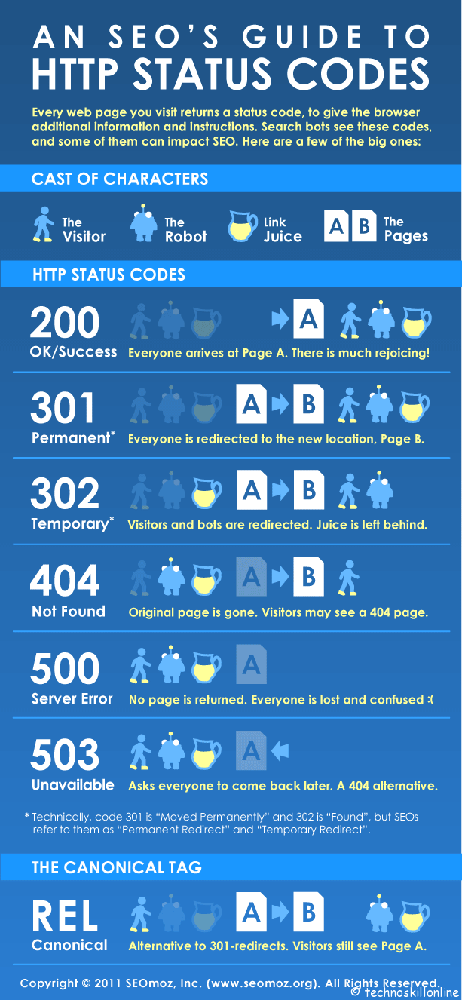
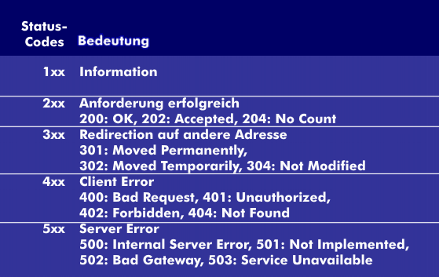
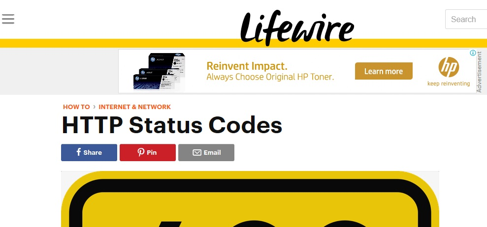
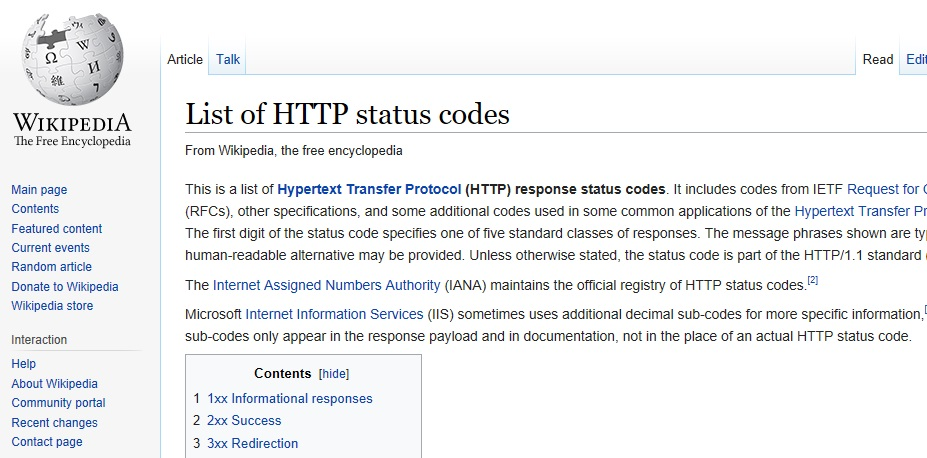

HTTP STATUS CODES
HTTP status codes are codes that is given by a website to identify the error source in a particular website.
Each code represents an error that have caused some troubles in accessing the internet.
STATUS CODES list

HTTP status codes are standard response codes given by web site servers on the Internet.
The codes help identify the cause of the problem when a web page or other resource
does not load properly.
The term HTTP status code is actually the common term for the HTTP status
line that includes both the HTTP status code and the HTTP reason phrase.
HTTP status codes are sometimes called browser error codes or internet error codes.
For example, the HTTP status line 500: Internal Server Error is made up of the
HTTP status code of 500 and the HTTP reason phrase of Internal Server Error.
Two major groups of HTTP status code errors exist:
4xx Client Error
This group of HTTP status codes include those where the request for a web page or other resource contains bad syntax or cannot be filled for some other reason, presumable by fault of the client (the web surfer).
Some common client error HTTP status codes include 404 (Not Found), 403 (Forbidden), and 400 (Bad Request).
5xx Server Error
This group of HTTP status codes include those where the request for a web page or other resource is understood by the website's server but is incapable of filling it for some reason.
Some common server error HTTP status codes include the ever popular 500 (Internal Server Error), along with 503 (Service Unavailable) and 502 (Bad Gateway).
See a complete list of errors on my HTTP Status Code Errors page.

Other HTTP status codes exist in addition to 4xx and 5xx codes. There are also 1xx, 2xx, and 3xx codes that are informational, confirm success, or dictate a redirection, respectively. These additional types of HTTP status codes aren't errors so you shouldn't be alerted about them in the browser.
Important: An HTTP status code is not the same as a Device Manager error code or a system error code.
Some system error codes share code numbers with HTTP status codes but they are different errors with completely different associated error messages and meanings.
Table
HTTP STATUS CODES
| Name |
Description |
ERROR CODE |
| OK/ SUCCESS |
everyone arrives at page a particular page |
200 |
| Permanent* |
Everyone is directed to the new location. |
301 |
| Temporary |
Visitors and bots are redirected. Juice is left behind |
302 |
| Not found |
Original PAge is gone |
404 |
| SERVER ERROR |
NO PAGE IS RETURNED. EVERYONE IS LOST AND CONFUSED |
500 |
| unavailable |
asks everyone to comeback later |
503 |
| CANONICAL |
ALTERNATIVE TO 301-REDIRECTS VISITORS STILL SEE PAGE A |
REL |
|
|
sOURCES
We all love to explore the work of others.So , we have provided some with different authors to that defines how SEO works included here are what's most important to you.

HTTP STATUS CODES BY LIFEWIRE.COM
HTTP status codes are standard response codes given by web site servers on the Internet.
The codes help identify the cause of the problem when a web page or other resource does not load properly.
The term HTTP status code is actually the common term for the HTTP status line that includes both the HTTP status code and the HTTP reason phrase.
HTTP status codes are sometimes called browser error codes or internet error codes.
For example, the HTTP status line 500: Internal Server Error is made up of the HTTP status code of 500 and the HTTP reason phrase of Internal Server Error.
Learn more

List of HTTP status codes by WIKIPEDIA
This is a list of Hypertext Transfer Protocol (HTTP) response status codes. It includes codes from IETF Request for Comments (RFCs), other specifications, and some additional codes used in some common applications of the Hypertext Transfer Protocol (HTTP). The first digit of the status code specifies one of five standard classes of responses. The message phrases shown are typical, but any human-readable alternative may be provided. Unless otherwise stated, the status code is part of the HTTP/1.1 standard
Learn more